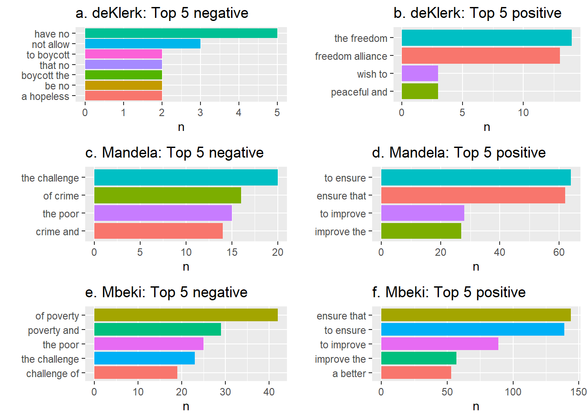

STA5073Z Assignment 2
Abstract
Introduction
The state of the nation address (SONA), commonly referred to as the ‘Opening of Parliament’ is an annual event wherein the president delivers a speech summarizing the political landscape for the current and upcoming year. The SONA touches on a wide range of themes ranging from socio-economic issues to political endeavors, this provides a snapshot of a nation’s aspirations, difficulties, triumphs, and current events. South Africa has experienced substantial socio-economic transitions, had to navigate many novel and historic challenges, and undertake developments for improvement over the past 3 decades.
This presents an intriguing opportunity for data analysis with the aim of understanding the status and progression of a country and its endeavours. In this assignment we will conduct an exploration of the sentiments and the topics integrated in the SONA speeches from the years 1994-2023, as well as how the use of a large language model (LLM) such as ChatGPT can provide insights and contributions to this task.
The assignment has a range of objectives, one of them is data cleaning and preprocessing to ensure there is good quality data to perform downstream analysis. The next objective is to perform sentiment analysis and topic modelling on the speech text and analyze over multiple variables to get a picture of the political climate in different circumstances of the country, and present these in a scientific format. Lastly, how LLM’s were used to bolster this effort.
Sentiment analysis can offer comparative insights on how optimistic or pessimistic the circumstances were for the country over the variables we are interested in, such as per year, per president, per speech or overall. Delving deeper into the sentiment analysis it is possible to extrapolate the level of concern or urgency the presidents regard certain issues based on the words they use to describe it and the frequency of which they mention it. For the analysis objectives of this assignment, we make use of the dictionary-based (lexicon) approach.
Topic modelling seeks to uncover themes and topics within the SONA speeches. By analyzing the topics and themes and their prevalence across the speeches, it is possible to extract information about the nature of each presidents concerns and views. We can infer knowledge on the priorities of the government as well as the affairs that were occurring in the years which the topic was discussed. This type of analysis is useful for uncovering themes in a collection of text, classifying documents into topics and using the classification to search, organize or summarize large bodies of text.
Latent Dirichlet Allocation (LDA) is a probabilistic generative model which is commonly used for topic modelling, it is the method that will be used in this assignment. The objective of LDA is to discover and characterize these word-topic distributions as well as the topic proportions in each document (Blei et al., 2003)
And lastly, we aim to employ the use of an LLM such as ChatGPT to evaluate and critically assess the effectiveness and versatility of the model’s performance.
Literature Review
Sentiment analysis and topic modelling are used in a variety of fields, with application in financial market prediction, business review analyses, and political science research, to name a few.
Bhardwaj et al. (2015)describes a system in which sentiment analysis is applied to stock indices, which act as indicators for overall stock market performance. Another paper by Rao Srivastava (2012) assessed the association between tweet sentiments and market performance, by assessing tweet and market data from 14 companies. The authors used a Naïve Bayesian classifier for sentiment classification and found that the polarity of sentiments significantly influenced investment and stock prices. In addition, they found that the previous week’s sentiments strongly impacted the following week’s opening and closing stock prices.
Manufacturers and companies may also benefit from sentiment analysis by assessing customer preferences and seasonal, market trends. These organizations can perform sentiment analysis on customer review data with the aim of improving product- or service quality. Singla et al. (2017) performed sentiment analysis on Amazon phone review data by assessing the negative and positive polarity in customer responses, with sentiments such as anger, anticipation, joy, and disgust, to name a few. The authors developed a support vector machine (SVM) model for sentiment classification and found that most customers preferred Samsung phones.
Sentiment analysis has also been used in political science research, where these studies usually use data obtained from social media sites, in addition to various news platforms. Singh et al. (2017) proposed a method to assess people’s opinions and biases towards demonetization, an experiment particularly relevant in India, where the government demonetized ₹500 and ₹1000 banknotes. The authors used a lexicon-based approach, namely Valence Aware Dictionary and Sentiment Reasoner (VADER) for sentiment analysis of tweet data.
In the past, public opinions were usually collected using interviews and surveys, however, in the modern era of social media, there is a multitude of shared opinions expressed on online platforms such as Twitter and Facebook. Researchers are now interested in how news media can outline a campaign or a public figure (such as a politician) and how this affects public opinion. In contrast, researchers are also interested in how social media platforms and public opinions can influence news agenda.
Researchers often perform sentiment analysis and topic modelling in tandem to discern public sentiment as well as recurring themes and topics (Guo et al., 2016).
Topic modelling, as we’ve discussed before, is an unsupervised machine learning technique that uncovers abstract ‘topics’ within a document or a collection of documents. These ‘topics’ are characterized by their related words. The approach views each document as an unordered “bag of words”, with words appearing at varying frequencies within or across documents. The model then calculates the weights of topics in the document based on the frequency of words related to those topics. By examining these topic weights, we can identify the main idea or theme of the document.
The most widely used topic model is Latent Dirichlet Allocation (LDA; Blei, Ng, & Jordan, 2003). The LDA model assumes that the proportion of topics in a document are sampled from a Dirichlet distribution. In contrast, other “bag-of-words” related topic models assume different distributions such as the log-normal distribution in the Correlated Topic Model (Blei & Lafferty, 2006).
LDA models are usually applied to research that uses well-constructed text documents such as newspaper- and academic journal- articles that are peer-reviewed, edited, and proof-checked for grammatical- and spelling- errors. In contrast, LDA models may not be as effective in the topic analysis of social media data (Hong & Davison, 2010; Tang, Zhang, & Mei, 2013) Social media data such as tweets are usually unstructured, restricted to 14o characters, and contain abbreviations, symbols, and truncated and misspelt words, in addition to poorly formatted and grammatically incorrect sentences.
Despite this limitation in online data, many researchers have used social media data due to the large volume of freely available, public sentiment.
Xie et al. (2021) assessed the public response to COVID-19 on Weibo, a Chinese microblogging website. The authors used LDA topic modelling and sentiment analysis on Weibo posts and found that public opinion shifted in response to COVID-19, where many people were able to learn about COVID-19 and express gratitude to medical professionals, while also expressing concerns about economic and life restoration. In addition, the authors found that influential individuals contributed significantly to positive, public sentiment. The authors also found recurrent themes during LDA analysis, with prominent topics such as: “Fight the virus together”, “knowledge”, “assistance” and “global economics”.
Another study by Biraj Dahal et al (2019) assessed public opinions and views on climate change, by performing sentiment analysis (using Valence Aware Dictionary sEntiment Reasoner) and LDA topic modelling on Twitter data containing geotagged tweets. The researchers compared themes and moods concerning climate change across different countries. Sentiment analysis suggested that the overall debate is negative, especially when Twitter users react to political or extreme weather events. On the other hand, topic modelling suggested that there are a variety of climate change-related topics, with some topics directly related to climate change such as “carbon footprint”, and “fossil fuel industry”, while other topics have a more social perspective such as “humanitarian” and “international agreement”. In addition, some topics suggested opposition to the climate change movement with topics such as “weather/belief”. Interestingly, the authors also found that the USA is less focused on policy-related topics relative to other countries. The USA had a more negative sentiment towards climate change and had topics such as “politics/hoax” as central themes.
Exploratory Data Analysis
The data consists of 36 speeches made by the presidents during their terms from May 1994 to February 2023. The number of speeches made by each president varied. Specifically, F.W. de Klerk and Motlanthe each have one recorded speech, while Nelson Mandela and Cyril Ramaphosa have seven speeches each. In contrast, Jacob Zuma and Thabo Mbeki have ten speeches each. Although each speech is unique in its own way, there are certain utterance that are common in the group of speech of each president. The manner in which they speech is consistent through the different speeches and this can be see through the words that they use and the sentiment they possess. Each president also gave their speeches for a varied amount of time. The following figure shows the average length of a speech according to the number of sentences used.
Two distinct patterns stand out when examining the Figure 1 , the first being the shortness of F.W. de Klerk’s speech. His final pre-election speech in office consisted of 97 sentences, which pale in comparison to other pre-election speeches in the data set. For instance, Nelson Mandela’s pre-election speech in 1999 was substantially longer with 288 sentences, while Jacob Zuma’s pre-election speech of 2014 was even more extensive with 309 sentences.
On the other hand, Ramaphosa stands out for his consistent and relatively lengthy speeches. On average, his speeches run for about 327 sentences. In contrast, the other presidents, namely Mandela, Mbeki, Motlanthe, Zuma, fell within a similar range, with an average of around 250 sentences per speech. These distinct patterns shed light on the varying communication styles and approaches of these South African presidents in their speeches.
Additionally, it is important to consider the timing of each speech, as it significantly influences the communication style chosen by each president. These speeches fall into three main categories: pre-election, post-election, and general SONAs. The distinct goals and messages associated with each category result in varying sentiments in their speeches. Pre-election speeches are characterized by optimism, unity, and empowerment aimed at voters, naturally resulting in a predominantly positive sentiment. Post-election speeches convey sentiments of gratitude and hope, expressing thanks to the electorate and fostering a sense of hope for the future, also leading to a largely positive sentiment. In contrast, general annual SONAs often focus on reassurance and policy changes. These speeches aim to reassure the public about the government’s commitment to addressing various issues and to announce policy changes. While the sentiment remains positive, it may be less pronounced than in pre-election and post-election speeches.
Figure 2 illustrates the evolving sentiment of these presidential speeches over time, reflecting how the timing and specific objectives of each speech category contribute to the overall sentiment
The net sentiment in the dataset was determined by adding up the values associated with positive and negative words, as provided by the AFINN lexicon. Among the presidents in the dataset, F.W. de Klerk is the earliest. Notably, the final speech of his presidency, while still maintaining a positive sentiment, registers as having the lowest net sentiment in the entire dataset. Based on the data it cannot be concluded whether this is due to the speech being short or his general speech making style. The general trend in the data for higher sentiment during election time holds for most of the speeches over time for each president Mbeki's general SONAs of 2013 and 2015 stand out as exceptions, featuring the highest net sentiments in the dataset, with values of 514 and 513, respectively
Methods
Sentiment Analysis
N-gram Tokenisation
The sentence tokens previously generated, were then tokenized into bigrams, whilst ensuring all bigrams are in lowercase to reduce bigram redundancy, e.g., ("citizens of" vs "Citizens of"). Subsequently, each bigram was separated into its constituent words so that stop words could be removed. In cases where either word or both words within a bigram contained a stop word, the entire bigram was removed. The same procedure was repeated, to separate words into trigrams.
Sentiment analysis on bigrams using the AFINN lexicon
The AFINN lexicon is a list of English terms manually rated for valence with an integer between -5 (negative) and +5 (positive) by Finn Årup Nielsen between 2009 and 2011. The AFINN lexicon was used to find the sentiment of each word within a bigram, by assigning a numeric value from -5 to +5 to each word within the bigram. Words within a bigram that do not appear in the AFINN lexicon, received a sentiment value of 0, as to avoid the placement of NA values. The net sentiment for each bigram was then calculated by adding the sentiment values for each of the words within a bigram. Bigrams with a net sentiment value > 0, were classified as having positive sentiment, whereas bigrams with a net sentiment value < 0, where classified as having a negative sentiment, and bigrams with a NETT sentiment value of 0 were classified as having a neutral sentiment.
The Bing Lexicon was then utilized to associate sentiments to the individual words of the trigram tokenization output. Bing labels consist of "positive", "negative" and "neutral". The code performs left joins for each word in the trigram to capture the sentiment of each word. The resulting dataset was then organized to include sentiment labels for each word in the trigram to facilitate sentiment analysis for downstream analysis.
Negated Words
Negated bigrams were identified, where the first word of the bigram is a negative word such as "not", "no, "never" and "without". In these cases, if the negated bigram's sentiment was positive, we changed the sentiment to negative and vice versa. The sentiment remained the same for all other cases.
Neutral Bigrams
Bigrams with neutral sentiment were removed since these bigrams can be misconstrued in instances where the word(s) did not appear in the AFFIN lexicon and so were assigned 0 sentiment scores. For the Bing lexicon, in cases where there was no sentiment label matched in the Bing lexicon, a "neutral" label was assigned.
Assessing Sentiment
The overall sentiment per president was determined by finding the class, either positive or negative, with the greatest number of bigrams assigned to that class. This also gives us an overview of the overall sentiment across all presidents. In addition, the sentiment per speech was assessed to find outlier speeches with negative sentiment. Finally, we also assessed the sentiment per year.
The trigrams were then categorized into "positive", "negative" or "neutral" based on their net sentiment scores calculated by evaluating the balance of positive and negative words. The sentiment analysis was then visualized over multiple levels such as, for each president, each year, over time, by year and president and per speech.
LDA Topic Modelling
The frequency of occurrence of each bigram in each speech was calculated to get the relative occurrence of a bigram in a speech. The cast_dtm() function was then used to convert the data frame into a DocumentTermMatrix class, where the function requires the filename, bigram and bigram per-file-frequency. Subsequently, the LDA() function in r was used to group similar bigrams into their constituent topics using LDA as previously discussed. Numerous values of k (number of topics) were initially assessed, however we assigned k = 2 topics as a hyperparameter since increasing the value of k did not improve discrimination between topics. For this analysis, we looked at the beta probabilities i.e., the bigram-topic probabilities, which was computed by parsing the results of LDA to the tidy() function. The tidy() function converts the data frame to a tidy format, where each column is a variable (bigram), each row is an observation (filename) and each cell has a single value (frequency of bigram in the file).
The top 20 bigrams were ordered in descending order of beta value and plotted for all presidents, including for each individual president, however, we only show this for all presidents since the per-president plots convey very little insight.
For the per-president topic analysis, we show the Log2 ratio of beta in topic 2 / topic 1, which is a measure used in topic modelling to identify terms that have the greatest difference in beta between topic 1 and topic 2. The log2 ratio is useful because it makes the difference symmetrical. This can help to identify which bigrams describe a certain topic, by showing which bigrams have a much higher probability in one topic compared to another.
It is important to note that only bigrams in either topic 1 or 2 with beta values greater than 0.001 were included, after which the log2(topic2 beta /topic1 beta) was computed for each bigram. The log ratios were then grouped according to direction, where a log ratio > 0 infers that the bigram likely belongs to topic 2, while a log ratio <= 0 infers that the bigram likely belongs to topic 1. The top 10 absolute log ratios in each topic group were then determined and the raw log ratios plotted as bar plots for further comparison.
Next the document-topic probabilities were extracted. To accomplish this task, LDA was performed as above with the only differences being that the k was set to 4. The most significant terms were extracted based on their gamma values. In order to allow for further analyses, the output was organized into tidy format, and the speech data into a tibble. LDA topics and text data was integrated by linking topics and speeches via their filenames. Subsequent analysis involved determination of highly relevant topics to each speech and identifying top terms for each topic.
Results
Sentiment Analysis using Bigrams and Trigrams
Bigrams


Trigrams

LDA Topic Analysis Using Bigrams
The figure below shows the results of topic analysis using beta probabilities (bigram-topic probabilities), where the beta probability represents the probability that a bigram belongs to a certain topic. See discussion for further interpretation.

The figure below shows the results of beta topic analysis using beta probabilities (bigram-topic probabilities) for former president Mandela. See discussion for further information.
Discussion
Sentiment Analysis for Bigrams
In Figure 3 and Figure 4 we see that DeKlerk's top 5 bigrams with negative sentiment are about hopelessness and boycotting, possibly in relation to the end of the Apartheid regime. Mandela and Mbeki's top 5 bigrams with negative sentiment are mainly about challenges, such as crime and poverty. We see that Motlanthe's top 5 bigrams with negative sentiment is also focused on poverty, but now special attention is given to criminal justice. Zuma's top 5 bigrams with negative sentiment is also about finances, but also pays attention to violence. Ramaphosa's top 5 bigrams with negative sentiment is focused on (gender based) violence.
President deKlerk's top 5 bigrams with positive sentiment looks towards freedom and peace, which again points to the end of Apartheid. All other president's top 5 bigrams with positive sentiment have undertones of hope and improvement.
Albeit a common trend of poverty and crime post-Apartheid, we see that the general sentiment is positive across all presidents, in Figure 5 which is reinforced by were the frequency of positive sentiment far surpasses that of the negative sentiment.
Sentiment Analysis for trigrams
The results of the trigram split expresses very similar insights to the bigram split. Referring to Figure 7 we note that De Klerk and Mandela echoed very similar positive remarks regarding peace, reconciliation and freedom at the time due to the abolishment of the apartheid regime and welcoming of the freedom alliance. Mbeki follows with discussions of black economic empowerment, showing the developments in concerns during the countries plight for equality. Motlanthe's sentiment analysis was not insightful, this is likely since his presidency lasted 8 months. Zuma frequently mentioned the public works programme, which he was launching in 2014 and Ramaphosa also mentioned the African Continental Free Trade Area (ACFTA), echoing his support for collaboration with other African nations (Obeng-Odoom, 2020).
Figure 8 depicts De Klerk's negative sentiments are insightful into the public opinion at this time, he mostly spoke about concerns and boycotting, likely trying to placate the public's concerns over the transition and trying to discourage boycotting of elections. All subsequent presidents had emphasized concerns over crime, violence, and poverty with Zuma and Ramaphosa sharing concerns about corruption. This implies a timeline of when issues surrounding corruption were becoming concerning. Additionally, Ramaphosa mentions the state of disaster, in context of the COVID-19 pandemic (Arndt et al., 2020), as well as the expropriation of land as he is determined to fulfil the promise of lawful land reform post-apartheid.
LDA Topic analysis using Bigrams
As we can see in Figure 9 , the bigrams with high beta probabilities are prevalent in both topics and so there is not much discrimination between the two topics. However, if we look at the tails of both bar plots, we see some differences. Topic 1 has themes of unity, improvement, and new opportunities possibly in relation to nation building, while topic 2 has themes of freedom, strength, opposition and justice possibly in relation to the crime, poverty and social injustice.
The log2(topic 1/topic 2) plots above in Figure 10 shows the bigrams with the greatest difference between the two topics. In the deKlerk, Mandela, Mbeki and Ramaphosa plots, we see a divide where topic 1 (red) is mostly about social injustice, (political) violence and unemployment or economic crises, while topic 2 (green) is hopeful, with topics such as freedom, peace and triumph. Distinction between the topics are not possible for Motlanthe, possibly due to the fact that only 1 speech is available for this class. We see that Zuma is also an outlier with one theme mainly focused on negative sentiment such as (political) crime, social injustice and poverty.
This analysis shows that most presidential speeches have polarity, with positive sentiment touching on topics such as freedom, hope and peace, in contrast to negative sentiment touching on topics of crime, social injustices and poverty.
For the document-topic probabilities, we see that most presidents had a relatively stable set of interests and themes in their speeches. Table 1 contains the top terms for each topic, we can infer that topic 1 relates international relations such as the world cup and United Nations, additionally the local community. Topic 2 revolves around economic growth, topic 3 is focused on public services and humanitarian themes and topic 4 seemingly involves government expenditures and regional government. From Figure #, we see that Mbeki, Zuma and Motlanthe focused on Topic 1 which may be due to his concerns over poverty and job creation as seen from sentiment analysis and Zuma and Motlanthe as they were involved in the 2010 world cup. Ramaphosa, Zuma and Mandela appeared in topic 2, Ramaphosa shared themes of economic growth the most, likely due to the bleak financial climate during and after COVID-19. Mandela and De Klerk were most concerned with humanitarian issues due to the abolishment of the apartheid regime. Finally, Zuma was most present in topic 4, a topic surrounding government expenditure and the eastern cape. This may be due to his frequent expression of concern over corruption.
Overall, we see a mostly discrete delineation of themes between Zuma, Ramaphosa, Mandela and Mbeki. De Klerk and Motlanthe shared themes with other presidents likely due to having given a disproportionate number of speeches compared to other presidents.
Conclusion
This analysis provides valuable insights into the sentiments and themes of presidential speeches in the post-apartheid South African landscape. It outlines the optimism and hope for the new nation as well as the struggles and challenges faced. Each president brings unique insights and goals for the nation and there is demonstration of the timeline of interests over various social and historical events.
However, limitations were identified and to improve on these in further analysis a recommendation for more language diversity and extensive or standardized data may provide more accurate and concise results in this context.
Additionally, the use of an LLM for this analysis proved highly useful in debugging of simple code errors and automating simple but monotonous tasks when coding, and proved a valuable took for generation of synonyms, summaries and proof-reading.
Overall, the assignment involved implementation of a range of skills and allowed for exploration of potential tools to compliment coding and writing.